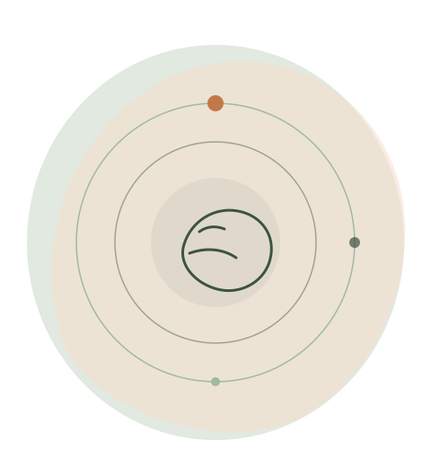

Rug- & nekklachten
Hernia, spit, whiplash en chronische spanning in rug en nek.
Osteopathie in Bemelen
Bij Osteopathie Hanselaar kijken we naar het hele lichaam — niet alleen naar de klacht. Met rustige, handmatige behandelingen ondersteunen we je natuurlijke vermogen om te herstellen.

Vergoed door alle zorgverzekeraars
Geen verwijzing nodig
Voor jong & oud
Rustige praktijk in Bemelen
"Het lichaam is een geheel — een verstoring op één plek beïnvloedt vaak een ander deel."
A.T. Still, grondlegger osteopathie
Onze aanpak
Met zachte, manuele technieken onderzoeken en behandelen we spanningen en bewegingsbeperkingen in spieren, gewrichten, organen en bindweefsel. Zo ondersteunen we het zelfherstellend vermogen van je lichaam.
Behandelingen
Elke behandeling is maatwerk. Hieronder een greep uit de klachten waar we regelmatig mee helpen.
Hernia, spit, whiplash en chronische spanning in rug en nek.
Spanningshoofdpijn, kaakklachten en duizeligheid.
Voorkeurshouding, huilbaby's, krampjes en groeiklachten.
Herstel sneller en voorkom terugkerende blessures.
Hoe werkt het
Boek eenvoudig online een moment dat jou uitkomt.
We bespreken je klachten en onderzoeken je houding en beweging.
Met zachte technieken brengen we je lichaam weer in balans.
Praktische tips en, indien nodig, een vervolgafspraak.
Ervaringen
Na jaren met lage rugpijn voelde ik na een paar behandelingen al verschil. Rustige aanpak en duidelijke uitleg.
Onze dochter huilde veel als baby. Na twee behandelingen sliep ze al stukken beter. Heel fijn behandeld.
Als hardloper kamp ik vaak met blessures. Hier word ik écht geholpen, met aandacht voor de oorzaak.
Plan vandaag nog je afspraak en ervaar persoonlijke, rustige zorg in onze praktijk in Bemelen.